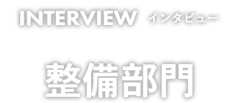

2020年新築したHINODE&SONSグループの整備工場は県内トップクラスの最新設備を誇ります。
整備工場と働く社員の様子をお伝えします！
- アルバオート株式会社 メカニック
- 鍛冶 亮介（2009年1月入社）
- 軽自動車から大型貨物、大型バスまで
自動車全般の車検、点検、一般整備、
フォークリフトの年次点検などを
行っております。

- アルバオート株式会社 メカニック
- 中原 信太朗（2019年4月入社）
- 小型自動車から大型自動車まで
メーカー問わず幅広く整備しています。
入社のきっかけを教えてください
特定のメーカーだけの整備を行うのではなく、多種多様な車両整備ができるから、
入社を決めました。
４輪２輪問わず、整備することやレース観戦することが趣味なので、仕事として本格的に整備をしたいと思い入社しました。
実際に働いてみての感想
多種多様な車両を整備することにより、日々新しい発見や面白さを感じることができる。
難しいところがたくさんありますが、しっかりと教えてくださるスペシャリストな先輩たちがいます。
そして明るい笑顔の人達と、整備工場が新しく綺麗でとても仕事しやすいです。
当社の良いところを教えてください
和気藹々としていて、困ったことや疑問にはすぐに答えてくれる職場です。
また、設備の自慢は大型車対応下部洗車機があるところです。壁面ステンレス加工に左右から高圧ガン設置していて、整備前に下部洗車を行うことで、綺麗な状態で整備が可能です！！
一番は社員全員仲良しです。みんな多趣味で、プライベートでも一緒に遊びにいきます。また、完成検査場が新しく、素晴らしいです。オンライン化され、検査数値も記入することなく自動で印字されます。本年２月稼働開始ですので、設備もピカピカです。
求職者へメッセージ
大型車は先進機能が装備され、過去と比べても修理は少なくなってますが、まだまだ整備士の存在が欠かせません。
普通自動車と比べると足回りやエンジン部分には、まだまだ機械いじりの楽しさが残っています。
自動車整備経験問わず大歓迎です。私はまだまだ未熟ですが、楽しく仕事をしています。
一緒に楽しく仕事しませんか？